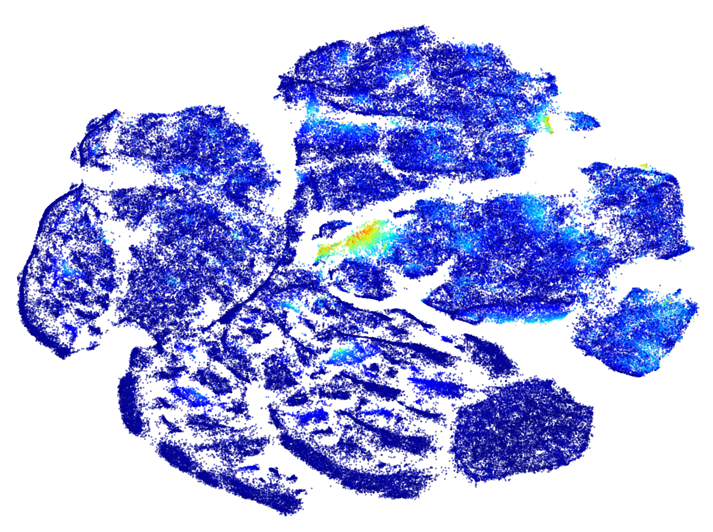

Built with Crossfilter, a JavaScript library for exploring large multivariate datasets in the browser. Crossfilter supports extremely fast (<30ms) interaction with coordinated views.
The primary cause of relapse in leukemia is minimal residual disease (MRD): the persistence of small numbers of leukemic cells during and after treatment. Automated detection approaches could help avoid relapse. This dataset (visne_mrd) contains nearly a half-million multivariate observations of individual cells-- and less than 0.5% are leukemic. Each measurement has been pre-processed by a standard hyperbolic arcsin transformation, and 8 variables corresponding to canonical markers have been selected. The observations have also been simplified from 8 dimensions into 2 using Barnes-Hut-SNE and colored by expression intensity of CD34. The charts display the distributions of expression intensity in your current selection.
Some questions to consider:
Why do cells expressing CD15 show to distinct levels of CD45 expression? Why does the higher-intensity cluster
Why do cells expressing CD7 strongly express CD45 and CD38?
